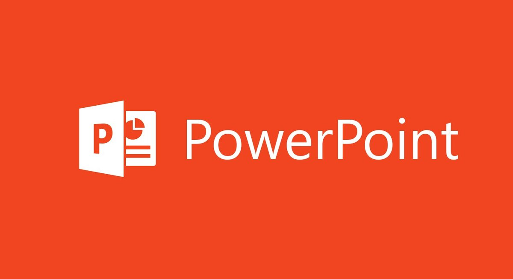
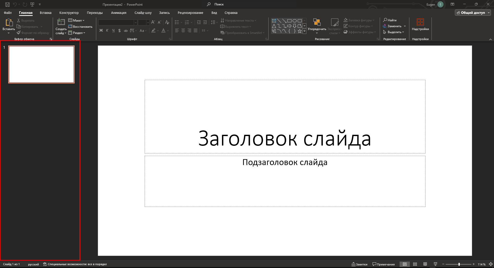
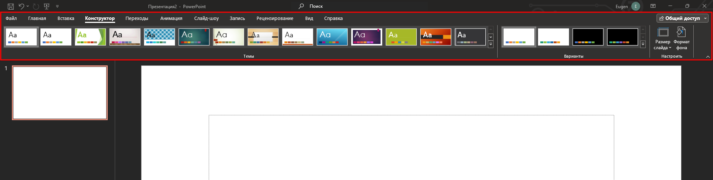
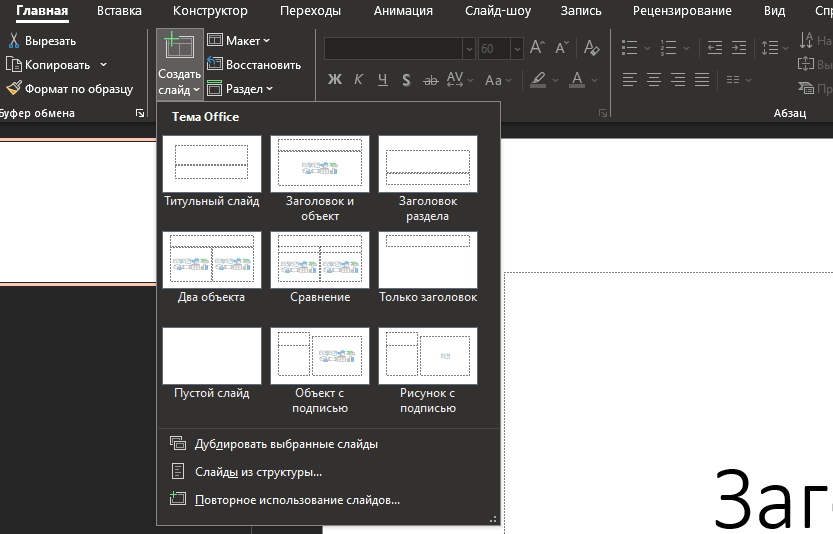
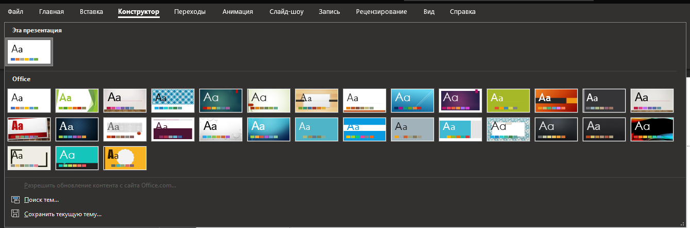
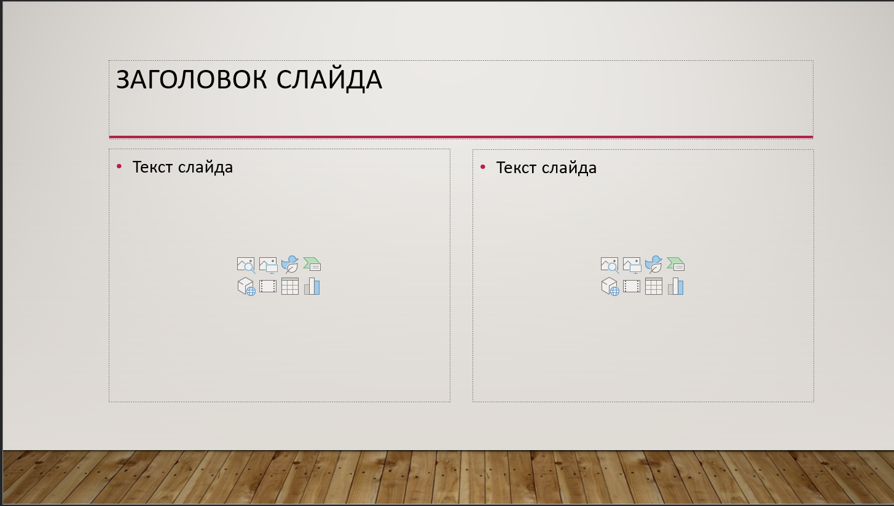
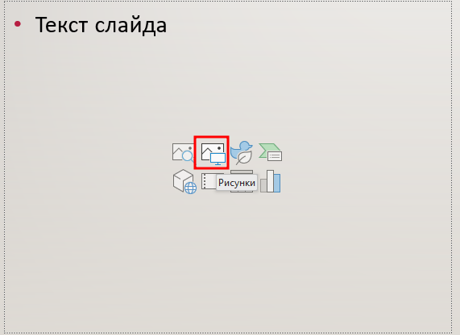
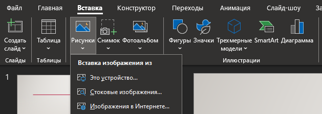

Microsoft PowerPoint – Программа для создания презентаций, предназначенная для удобного оформления и демонстрации информации в виде слайдов. Она была впервые выпущена в 1990 году. На момент создания этого учебника, последней версией PowerPoint является версия 2021 года, поддерживаемая на платформах Windows, MacOS, Android, iOS, а также доступная в виде веб-приложения через Office Online. Файлы презентаций PowerPoint обычно имеют расширение .pptx.
Интерфейс программы PowerPoint во многом повторяет интерфейс Word, поэтому в данной главе повторяющиеся элементы интерфейса (например окно "Файл") расмотрены не будут. После создания новой презентации, самое первое и заметное отличие в интерфейсе PowerPoint - это боковая панель со всеми слайдами презентации.
Также отличаются многие вкладки и группы на ленте инстурментов
Во вкладках "Главная" и "Вставка" находится кнопка для создания слайдов. При нажатии на стрелку вниз, появляется меню с выбором типа слайда. Слайд определенного типа будет содеражть подходящие поля. что повысит удобство при заполнении слайда содержанием.
Внешний вид и поля на слайдах изменяются при выборе темы. Тема презентации действует на все слайды, даже на те, которые уже были созданы. Чтобы изменить тему презентации, необходимо перейти на вкладку "Конструктор" и выбрать тему из списка. При нажатии на кнопку с изображением стрелочки вниз и полоски над ней, откроется полный список тем.
На новом слайде (только если не был выбран тип "Пустой") будут находится поля для добавления содержания. Поля могут хранить Заголовки, текст, изображения, видео и т.д.
Для добавления изображения в слайд можно использовать несколько способов: Нажать на изображение картины и компьютера в поле на слайде и выбрать из файловой системы изображение; На вкладке "Вставка" выбрать "Рисунок" и также добавить изображение из файловой системы. Или можно скопировать изображение, и вставить его прямо в слайде (комбинация клавиш CTRL+V или пункт "Вставить" из контекстного меню)
 Создайте небольшую презентацию из 3 слайдов на любую тему. Используйте тему для презентации, изображения и разные типы слайдов.
Тест
Какое расширение файлов используется для презентаций PowerPoint?
Зачем нужна боковая панель находящаяся слева в PowerPoint?
Что используется для изменения внешнего вида всей презентации?
В каком случае вкладки для редактирования таблицы будут видны?
Какой формат используется для документов MS Word?